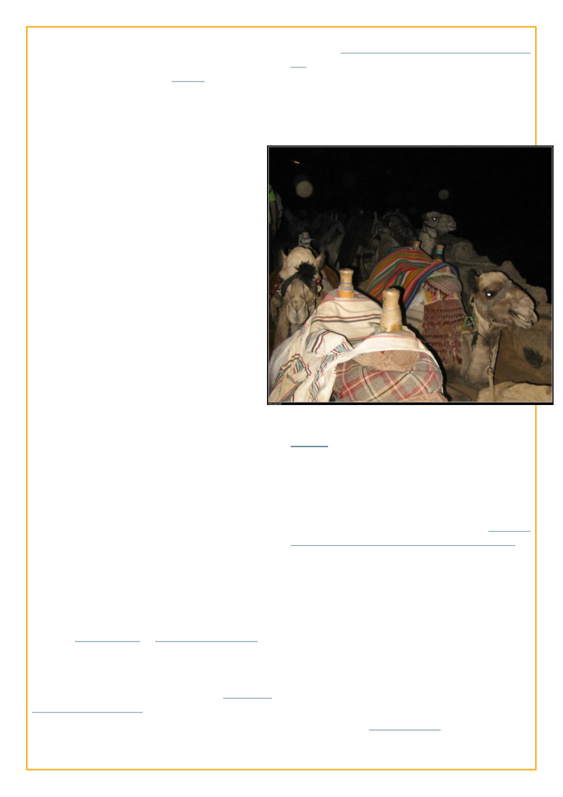

2009-10 - LJ Idol Season VI found me
hammering out entries in rickety internet cafes in half
an hour before catching a bus, such as:
Last night we pull into a little outpost in
the middle of the darkness of the Sinai. There
are three shelters in the pool of light -- two are
wooden frames with dried palm fronds for a
roof, one is made of brick but is largely open on
the front and also has palm fronds for a roof.
Three goats sit on a picnic table in front of the
latter. A loud techno beat blasting into the night
completes the completely surreal picture.
In one of the the shelters two local men
drink tea wearing the typical bedouin garb of
what we’ve called a man-dress for lack of a
better term and head covering. In the other
open one two men are playing a soccer game
on a tv screen. One of them has the white
uniform of the Egyptian police/military, with
three gold stars on the shoulder (unless they
have generals stationed at every little
checkpoint this does NOT mean what it means
on a western uniform). The brick structure is a
poorly stocked little shop. The sound and smell
of the diesel generator from which the little
outposts electricity no doubt comes from
dominates the inside of the shop.
The sign outside the shop identifies it as
the Buddha Cafe. A sign inside proclaims that
“Allah is great!” ... [posted two days later, as
didn’t have internet for two days of wandering
the Sinai, eventually posted from a little
internet cafe by the beach in Sharm el Sheikh,
Egypt]
Shockingly I don’t seem to have written a
passive aggressive reference to it at the time but it
was only a few weeks into the season, I think during
an almost comically frenetic escape from the
Egyptian seaside town of Hurghada after staying out
all night drinking with local friends, that I was
informed that due to another blasphemy I had
committed I would be banned from completing this
LJ Idol season (The Wise Osiris affair), though I
could still continue to go through the motions.
By mid November I was instead posting entries
from the unheated hold of a wooden sailing ship on
the Columbia River, waking up to a frost covered
deck.
Having learned (nearly) no lessons, and/or
being obstinate like mule, hosted an LJ Green Red
Room Holiday Party, which didn’t get me
excommunicated this time (maybe only because I
couldn’t be double excommunicated)
This crossover entry with Jack Batelin, private
eye, reminds me, did we ever find our who Jack
Batelin was?? Also, not to toot my own drum but I’m
cracking up reading this entry. I need to try to
recapture this style (and/or describe Gary being
tazered more often ;) and I wonder why I’m always in
trouble)
That (2010) March fellow LJ Idolist
whirled arrived from Australia. Here’s a scandalous
reveal I don’t know if was known, it was SHE that
was the mastermind of the abovementioned Wise
Osiris Affair. But also, I honestly don’t remember
what the Wise Osiris Affair actually was at all, other
than some nefarious scheme that got us both
excommunicated. Anyway, Ange and I after our
week of adventuring across the United States (in
which we met many more LJ Idolists, including
Gratefuladdict ahaha, not weird) were then officially
dating. Unfortunately, this one kind of fizzled away
and I only learned we were broken up from a public
entry she posted. She later briefly married a different
American she’d been writing haikus with on twitter.
When I eventually came to Australia, I did drop her a
line, but when she said she happened to be coming to
Geelong (where I was and am) I just said “oh that’s
nice” and we haven’t talked since. She was a good
writer though.
But anyway, no sooner had Whirled whirled
away than I was off to sea again. For the rest of the
 LiveJournal
LiveJournal Dreamwidth
Dreamwidth